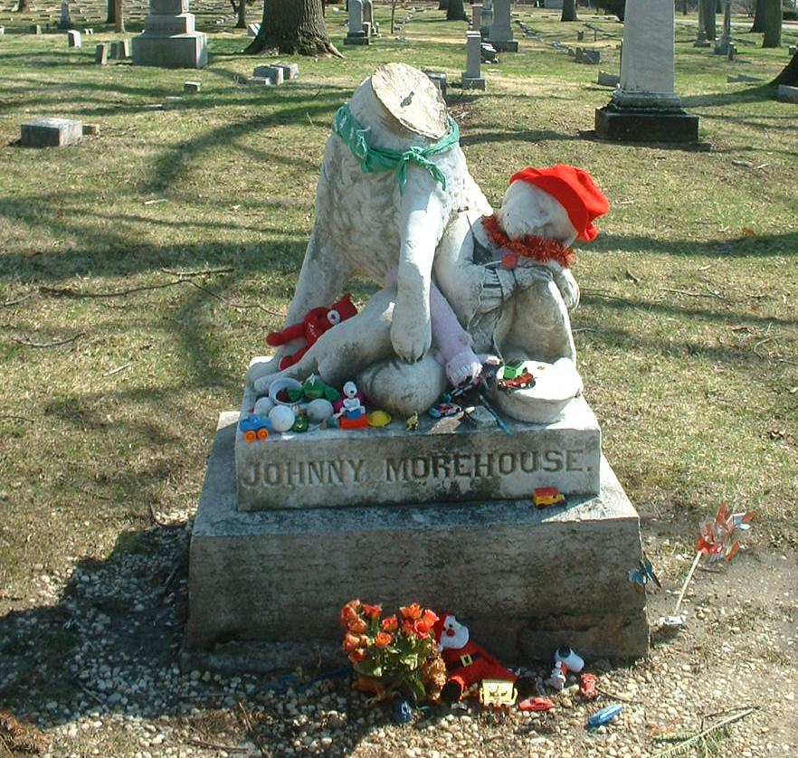

This is the grave of Johnny Morehouse and--according to legend--his dog, a pair who are Woodland's most most celebrated resident spirits. The story might be rooted in nothing more than an unusual tombstone, but this is what they say: Johnny fell into the Miami & Erie canal and froze to death, despite his faithful dog's efforts to pull him out. After he was buried, the dog laid on his gravesite and wouldn't be moved. Eventually it died from starvation and sadness. A special stone was made in 1861 to commemorate Johnny's dog's devotion. People leave toys, candy, and other trinkets on the stone--a ritual the cemetery management tolerates, as you can tell from the photo above.
Now they say that Johnny and his dog, reunited beyond the grave, roam the cemetery after hours. Barking is heard in the vicinity of the grave, and the two of them are spotted sometimes inside the perimeter fence. If the years I've heard are correct, then Johnny was about five years old when he died. So watch for a little boy and his pet dog.

UPDATE: It hurts to even have to show this, but sometime in late March of 2008, vandals actually cut the head off the Johnny Morehouse gravestone. For 147 years his dog protected his body in this one-of-a-kind piece of statuary, and now it's been destroyed.

It's a sad but unavoidable fact that places like this, meccas to people interested in ghost stories or unusual history , are more often the target of destructive types. People have appealed to me to take this item or that off my website entirely so sightseers will stop coming by so often. But I can't pick and choose, and if I didn't spread the story, there are plenty of other people who would (and already are). With that said, whoever showed up here and took a hacksaw to this little boy's special grave marker should be profoundly ashamed of themselves. It's hard to imagine what kind of person would do such a shitty thing--and it does happen much more often than it should. The "Death Angel" of Maple Grove Cemetery in Vermilion was decapitated and then removed several years ago, and Coshocton County Cemetery in West Lafayette has been so broken apart by vandals that the "witch" grave and her family's tombstones are barely there anymore. We can only hope that the cemetery association at Woodland may be able to replace the stone, though it will never be quite the same. In the meantime it at least remains in place. My thanks to Kelly Walker for the photographs.
Another Woodland ghost is a pretty blonde girl in jeans and white tennis shoes who sits on a stone and occasionally talks to passersby, who usually fail to realize she isn't a real person until later. The stone she sits on is also known to glow with an eerie blue light. No one knows for sure why her spirit is restless, but I've heard it theorized that she is unhappy because she's buried far across the cemetery from her father.
Dayton resident Ruby contributed this story of an encounter with a mysterious old man in Woodland Cemetery:
Back in 1984, in August a good friend and I were walking through Woodland Cemetery. I was attending college at the time, and didn't have a car. This was our shortcut to Kroger's. A prominent Daytonion by the name of Schantz is buried there. He was a business man and was quite famous near the end of the 19th century. We were walking past the family plot, and we saw a man tending to the grave of Old Man Schantz. He was dressed in the clothing of the time, very old-fashioned. I didn't think anything of it, because sometimes the local Historical Society gives tours of the cemetery dressed in period costumes. He looked to be about sixtyish. We both said hello to the gentleman and he just looked at us and smiled. I wanted to ask him about an upcoming tour of the place, when suddenly he just faded away. He was looking at us the whole time he was "tuning out". My friend and I took off and got the hell out of there. None of us ever spoke of the incident again. We also never cut through the cemetery again.
Now for a few interesting "orb" photos in some well-taken photos of the cemetery. These were sent by Amanda from greater Dayton. In her own words, "There were a few more that "orbs" showed up in but the ones above were the only ones that I actually had feelings that went along with the pictures."
About the stone pictured above Amanda says: I think this is the tombstone that is supposedly haunted by a young girl. There are toys, etc left for her. The flower pot was knocked over and some toys had fallen so I picked everything up and straightened things up. As I was doing so I had the creepiest feeling. I can't really explain it but...I really think it was something because I FELT it!"
There must be many other tales of mysterious and supernatural occurrences at Woodland which I don't have listed here; please send me an e-mail if you know of any. And if you're afraid of ghosts, for God's sake stay away from Woodland at night.
Back
forgottenohio@yahoo.com
facebook.com/andy.henderson.319